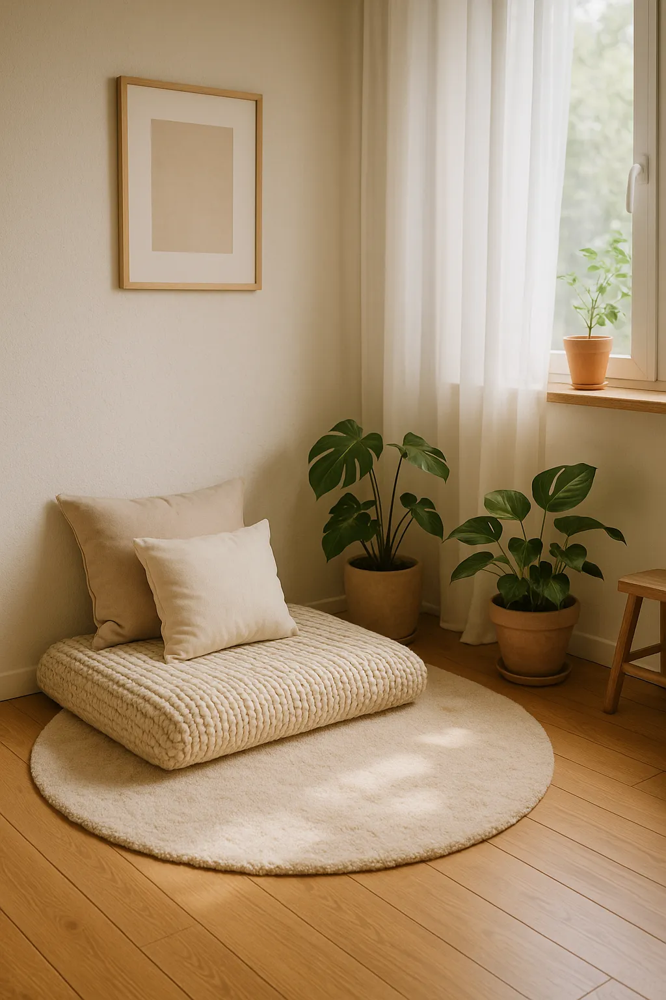
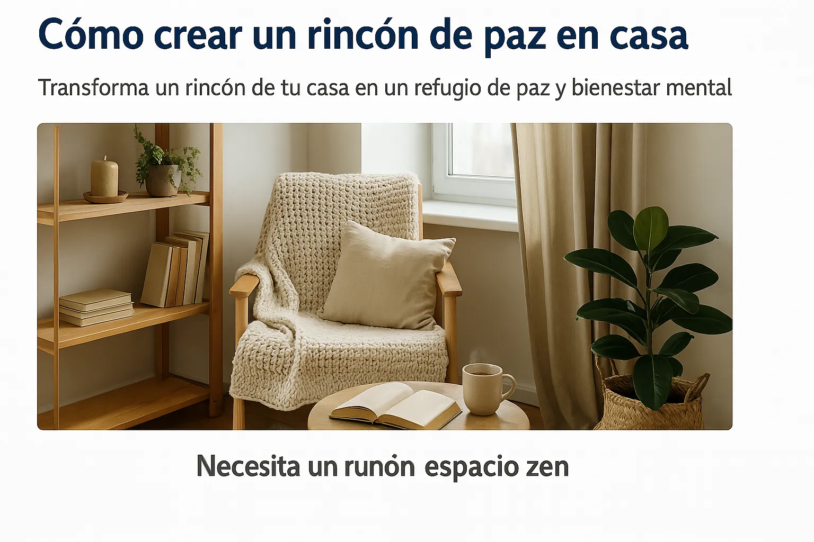

Cómo crear un rincón de paz en casa: transforma tu espacio sin gastar mucho
Introducción: Por qué tener un rincón de paz en casa cambia tu bienestar mental
¿Te imaginas llegar a casa después de un día agotador y tener un pequeño oasis solo para ti? Un rincón de paz en casa es tu espacio de calma y autocuidado. No importa si vives en un piso pequeño o compartes espacio: siempre puedes crear tu refugio personal con pocos elementos y mucha intención.
Beneficios de tener un rincón de paz en casa
Cuando tienes un lugar dedicado al descanso mental, tu mente aprende a relacionar ese espacio con la calma. Esto reduce el estrés, mejora tu concentración y fomenta hábitos más conscientes. Además, es el complemento ideal para practicar técnicas de respiración, seguir una meditación guiada o dedicarte al mindfulness diario.
Elementos clave para diseñar tu rincón de paz en casa
1️⃣ Espacio bien definido y libre de distracciones
El primer paso es elegir un lugar que puedas usar siempre que necesites desconectar. Puede ser una esquina del salón, un hueco en tu dormitorio o incluso un rincón del balcón. Delimita el espacio con una alfombra o biombo. Evita pantallas o aparatos electrónicos cerca.
2️⃣ Luz natural y ambiente acogedor
Si tienes ventana cerca, mejor. La luz natural eleva tu ánimo y da sensación de amplitud. Si no, usa luces cálidas y evita focos muy fríos o directos.
3️⃣ Plantas y elementos naturales
Las plantas purifican el aire y aportan frescura. Elige plantas fáciles de cuidar como potus, cactus o lavanda. Una pequeña maceta ya hace la diferencia.
4️⃣ Aromas y velas relajantes
La aromaterapia es tu aliada. Coloca velas con fragancias suaves (lavanda, manzanilla o vainilla) o usa un difusor. Los aromas reducen la tensión y ayudan a entrar en modo relax.
5️⃣ Textiles suaves: cojines, mantas y alfombra
Para sentarte cómodo y permanecer un rato, usa cojines grandes, mantas suaves y una alfombra que invite a sentarse sin zapatos. Son detalles que marcan la diferencia.
6️⃣ Música tranquila o sonidos naturales
Prepara una lista de reproducción con sonidos de lluvia, olas o melodías instrumentales. Puedes usarla mientras sigues tu rutina corta para reducir ansiedad o meditas unos minutos.
Cómo usar tu rincón de paz en casa: ideas prácticas
Para meditar o respirar conscientemente
Tu rincón puede ser tu lugar para practicar 5 o 10 minutos de respiración profunda. Revisa nuestra Guía de Respiración para aplicar ejercicios fáciles.
Para leer o escribir en tu diario personal
Ten a mano una libreta o tu Mindfulness Diario. Escribir unos minutos libera la mente de pensamientos repetitivos.
Para hacer yoga suave o estiramientos
Si tu espacio lo permite, desenrolla una esterilla y sigue nuestra Guía de Yoga para Principiantes. Unos estiramientos matutinos o nocturnos refuerzan la sensación de bienestar.
Para simplemente descansar y desconectar
No necesitas hacer nada. Puedes sentarte, cerrar los ojos y descansar. A veces, eso basta para reiniciar la mente.
Errores comunes al crear un rincón de paz en casa
- Recargarlo con demasiados objetos decorativos.
- Colocarlo en un lugar de mucho paso o ruido.
- Usarlo para trabajar o dejar cosas acumuladas.
Consejos para mantener tu rincón de paz siempre acogedor
Límpialo regularmente, airea las plantas y revisa velas y aromas. Tenlo siempre listo para cuando lo necesites, sin necesidad de reorganizarlo cada vez.
Inspiración extra: conecta tu rincón con otras prácticas
¿Te cuesta relajarte por la noche? Úsalo junto con nuestras guías de cómo dejar de sobrepensar antes de dormir y tu meditación guiada. Verás resultados en tu sueño y en tu estado de ánimo diario.
Preguntas frecuentes sobre crear un rincón de paz en casa
¿Necesito mucho espacio? No. Un metro cuadrado basta.
¿Cuánto cuesta hacerlo? Puedes hacerlo con lo que tengas: cojines, manta y luz cálida.
¿Qué pasa si vivo con más personas? Comunica que es tu espacio de calma y respétalo tú también.
¿Es útil para niños? Sí, pueden tener su propio rincón para leer o relajarse.
Conclusión: Crea tu refugio y cultiva tu calma diaria
Ahora ya sabes cómo crear tu rincón de paz en casa. Es tu refugio para desconectar del mundo, respirar y recordar que siempre puedes volver a ti mismo. Empieza con lo que tengas y notarás la diferencia.